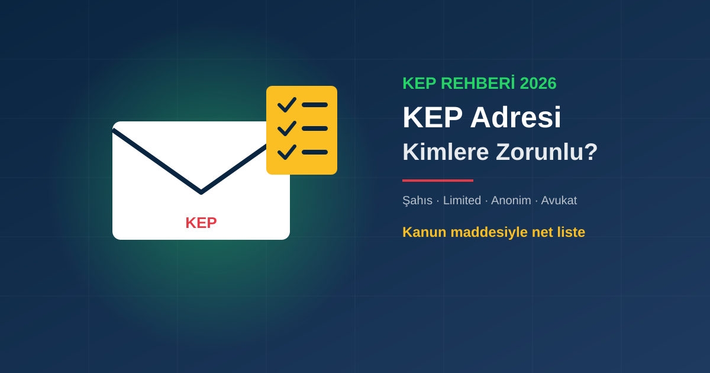

Şahıs şirketi, limited, anonim şirket, avukat ve dernekler için KEP ve e-tebligat zorunluluğu. Kanun maddesi, 5. gün kuralı, pazaryerleri ve KEP olmazsa ne olur.
U
UMAY TÜM BİLİŞİM Editör Ekibi
Yayınlanma: 8 Ekim 2026 · Güncelleme: 8 Ekim 2026

Kısa Liste: Kimler İçin Zorunlu?
Elektronik tebligat zorunluluğunun dayanağı 7201 sayılı Tebligat Kanunu'nun 7/a maddesidir (2018'de 7101 sayılı Kanunla değişik). Maddeye göre tebligatın elektronik yolla yapılması zorunlu olanlar:
Kanun metni şirket türlerini tek tek saymaz; "kanunla kurulanlar da dahil olmak üzere tüm özel hukuk tüzel kişileri" ifadesini kullanır. Ayrı tüzel kişiliği olan her şirket, kooperatif, dernek ve vakıf bu kapsama girer.
Şahıs Şirketi KEP Almak Zorunda mı?
Hayır. Şahıs şirketi ayrı bir tüzel kişilik değildir; işletme sahibinin kendisidir, yani hukuken gerçek kişidir. Kanun, birinci fıkra dışındaki gerçek ve tüzel kişilere talep etmeleri halinde elektronik tebligat adresi verildiğini, bu durumda tebligatın elektronik yapılmasının zorunlu hale geldiğini söyler.
Zorunlu olmasa da şahıs şirketleri KEP'i şu durumlarda pratikte ihtiyaç olarak görür:
Kurumsal müşterilere veya kamuya resmi ihtar ve bildirim gönderirken,
Kamu ihalelerinde ve bazı pazaryeri başvurularında iletişim adresi olarak istendiğinde,
İadeli taahhütlü mektup ve noter masrafından kaçınmak istendiğinde.
KEP ile E-Tebligat Arasındaki Fark
İki kavram sık karıştırılır:
Elektronik tebligat (UETS): Mahkeme, icra ve idari makamların yaptığı kanuni tebligatlar, PTT'nin kurduğu ve işlettiği Ulusal Elektronik Tebligat Sistemi üzerinden yapılır (Tebligat Kanunu md. 7/a).
KEP (Kayıtlı Elektronik Posta): Gönderenin, alıcının, gönderim zamanının ve içeriğin hukuken ispatlanabildiği e-posta sistemidir. Örneğin TTK 18/3'e göre tacirler arasında temerrüde düşürme, fesih ve sözleşmeden dönme ihtarları noter, taahhütlü mektup, telgraf veya güvenli elektronik imza ile KEP üzerinden yapılır.
KEP hakkında temel bilgiler için KEP Nedir? yazımıza bakın.
5. Gün Kuralı: Açmasanız da Tebliğ Edilmiş Sayılır
Kanuna göre elektronik tebligat, adresinize ulaştığı tarihi izleyen beşinci günün sonunda yapılmış sayılır. Mesajı okumamış olmanız süreyi durdurmaz. Dava, icra veya vergi süreleri bu tarihten itibaren işlemeye başlar. Bu yüzden zorunlu kapsamdaysanız elektronik adreslerinizi en az haftada bir kontrol etmeniz ya da bildirimleri cep telefonunuza yönlendirmeniz önemlidir.
Dikkat: Şirketinizde tebligatları kimin takip edeceğini yazılı olarak belirleyin. Tatil veya hastalık durumunda kaçırılan bir tebligat, itiraz süresinin dolmasına yol açabilir.
Pazaryerleri ve İhaleler KEP İstiyor mu?
Trendyol, Hepsiburada gibi pazaryerleri kurumsal satıcı başvurularında KEP adresi isteyebiliyor; şahıs şirketleri için şartlar farklı olabilir ve zaman zaman değişiyor. Güncel şartı başvuru yaptığınız platformun satıcı panelinden kontrol edin. Kamu ihalelerinde ise yazışmalar ve bildirimler için KEP adresi yaygın olarak kullanılır; ayrıntılar için EKAP İçin E-İmza yazımıza bakın.
KEP Adresi Nasıl Alınır?
KEP hesabı, BTK tarafından yetkilendirilmiş KEP hizmet sağlayıcılarından biri üzerinden açılır. Hangi sağlayıcıların bulunduğunu ve aralarındaki farkları KEP Sağlayıcıları Karşılaştırma yazımızda anlattık. Başvuruda genellikle şirket belgeleri ve yetkilinin e-imzası gerekir; e-imzanız yoksa ikisini birlikte planlayabiliriz.
Sık Sorulan Sorular
Tebligat Kanunu md. 7/a'ya göre tüm özel hukuk tüzel kişilerine (anonim, limited, kollektif, komandit şirketler, kooperatif, dernek, vakıf), kamu kurumlarına, noterlere, baroya kayıtlı avukatlara, sicile kayıtlı arabulucu ve bilirkişilere tebligatın elektronik yolla yapılması zorunludur.
Hayır. Şahıs şirketi ayrı bir tüzel kişilik değildir; sahibi gerçek kişidir ve elektronik tebligat zorunluluğu kapsamında değildir. Ancak talep ederek adres alabilir; bu durumda kendisine elektronik tebligat yapılması zorunlu hale gelir.
Kanuna göre elektronik yolla tebligat, muhatabın elektronik adresine ulaştığı tarihi izleyen beşinci günün sonunda yapılmış sayılır. Mesajı açmamanız bu süreyi durdurmaz.
Hayır. Kanuni elektronik tebligatlar PTT'nin işlettiği Ulusal Elektronik Tebligat Sistemi (UETS) üzerinden yapılır. KEP ise taraflar arasında hukuken ispatlanabilir yazışma için kullanılır; örneğin TTK 18/3 kapsamındaki tacirler arası ihtarlar KEP ile gönderilebilir.
KEP adresi edinmemek için doğrudan bir idari para cezası tanımlı değildir. Asıl risk süre kaçırmaktır: elektronik tebligat 5. günün sonunda yapılmış sayılır, ayrıca ihale, pazaryeri ve kurumsal yazışma süreçlerinde KEP adresi olmadan ilerlenemeyebilir.
U
UMAY TÜM BİLİŞİM Editör Ekibi
AYYILDIZ İMZA BİLGİ GÜVENLİĞİ VE TEKNOLOJİLERİ A.Ş. bayisi olarak 5+ yıllık sektörel deneyime sahip, BTK mevzuatı, 5070 sayılı Elektronik İmza Kanunu ve 6102 sayılı TTK üzerinde uzmanlaşmış uzmanlardan oluşan editör ekibimiz. Tüm içerikler güncel mevzuat ve uygulamaya uygunluk açısından gözden geçirilir.
✓ AYYILDIZ İMZA Bayisi✓ 5+ Yıl Deneyim✓ 81 İl Hizmet
📚 Bu Makalede Kullanılan Kaynaklar ve Yasal Dayanaklar
Tüm kaynaklar resmi devlet kurumları veya ilgili düzenleyici otoritelerin yayınladığı belgeler ile birinci derece kaynak şirketlerin web sitelerinden alınmıştır.
🔄 Bu içerik en son 8 Ekim 2026 tarihinde gözden geçirildi ve güncel mevzuata uygunluğu teyit edildi.